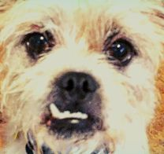
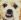

<!DOCTYPE html>
<html>
<head>
	<title>Mark's Snack Spot Leaflet Demo</title>

<!-- Demo code from https://leafletjs.com/examples/quick-start/ --> 

	<meta charset="utf-8" />
	<meta name="viewport" content="width=device-width, initial-scale=1.0">
	
	<link rel="shortcut icon" type="image/x-icon" href="docs/images/favicon.ico" />
    <link rel="stylesheet" href="https://unpkg.com/leaflet@1.7.1/dist/leaflet.css" integrity="sha512-xodZBNTC5n17Xt2atTPuE1HxjVMSvLVW9ocqUKLsCC5CXdbqCmblAshOMAS6/keqq/sMZMZ19scR4PsZChSR7A==" crossorigin=""/>
    <script src="https://unpkg.com/leaflet@1.7.1/dist/leaflet.js" integrity="sha512-XQoYMqMTK8LvdxXYG3nZ448hOEQiglfqkJs1NOQV44cWnUrBc8PkAOcXy20w0vlaXaVUearIOBhiXZ5V3ynxwA==" crossorigin=""></script>	
</head>
<body>

<div id="spot1" style="width: 600px; height: 400px;"></div>
<br/>
<div id="spot2" style="width: 600px; height: 400px;"></div>
<br/>
<div id="spot3" style="width: 600px; height: 400px;"></div>

<script>

<!-- Setting up maps -->
	var mymap = L.map('spot1').setView([42.448937, -73.253864], 15);
	var mymap2 = L.map('spot2').setView([42.448937, -73.253864], 15);
	var mymap3 = L.map('spot3').setView([42.448937, -73.253864], 15);

	L.tileLayer('https://api.mapbox.com/styles/v1/{id}/tiles/{z}/{x}/{y}?access_token=pk.eyJ1IjoibWFwYm94IiwiYSI6ImNpejY4NXVycTA2emYycXBndHRqcmZ3N3gifQ.rJcFIG214AriISLbB6B5aw', {
		maxZoom: 18,
		attribution: 'Map data &copy; <a href="https://www.openstreetmap.org/copyright">OpenStreetMap</a> contributors, ' +
			'Imagery © <a href="https://www.mapbox.com/">Mapbox</a>',
		id: 'mapbox/streets-v11',
		tileSize: 512,
		zoomOffset: -1
	}).addTo(mymap);
	
		L.tileLayer('https://api.mapbox.com/styles/v1/{id}/tiles/{z}/{x}/{y}?access_token=pk.eyJ1IjoibWFwYm94IiwiYSI6ImNpejY4NXVycTA2emYycXBndHRqcmZ3N3gifQ.rJcFIG214AriISLbB6B5aw', {
		maxZoom: 18,
		attribution: 'Map data &copy; <a href="https://www.openstreetmap.org/copyright">OpenStreetMap</a> contributors, ' +
			'Imagery © <a href="https://www.mapbox.com/">Mapbox</a>',
		id: 'mapbox/streets-v11',
		tileSize: 512,
		zoomOffset: -1
	}).addTo(mymap2);

	L.tileLayer('https://api.mapbox.com/styles/v1/{id}/tiles/{z}/{x}/{y}?access_token=pk.eyJ1IjoibWFwYm94IiwiYSI6ImNpejY4NXVycTA2emYycXBndHRqcmZ3N3gifQ.rJcFIG214AriISLbB6B5aw', {
		maxZoom: 18,
		attribution: 'Map data &copy; <a href="https://www.openstreetmap.org/copyright">OpenStreetMap</a> contributors, ' +
			'Imagery © <a href="https://www.mapbox.com/">Mapbox</a>',
		id: 'mapbox/streets-v11',
		tileSize: 512,
		zoomOffset: -1
	}).addTo(mymap3);
	

<!-- Add pop-ups for the location -->

<!-- https://gis.stackexchange.com/questions/265319/leaflet-popup-insert-image -->
var cozImg = '';
var tinyCozImg = '';

	L.marker([42.44993, -73.25080]).addTo(mymap)
		.bindPopup("<b>King Kone!!</b><br/>Mark snack spot #1<br/>" + tinyCozImg).openPopup();
	
	L.marker([42.44834, -73.25204]).addTo(mymap2)
		.bindPopup("<b>Otto's</b><br/>Mark snack spot #2<br/>" + tinyCozImg).openPopup();	
	
	L.marker([42.44754, -73.24427]).addTo(mymap3)
		.bindPopup("<b>Ayelada & CRUST</b><br/>Mark snack spot #3<br/>" + tinyCozImg).openPopup();

<!-- circle demo -->

	L.circle([42.448937, -73.253864], 500, {
		color: 'red',
		fillColor: '#f03',
		fillOpacity: 0.1
	}).addTo(mymap).bindPopup("I am a circle.");

<!-- polygon demo -->
	L.polygon([
		[42.448937, -73.253864],
		[42.45126, -73.25105],
		[42.44709, -73.24658]
	]).addTo(mymap).bindPopup("I am a polygon.");

<!-- click around and it tells you where it is on map1 -->

	var popup = L.popup();

	function onMapClick(e) {
		popup
			.setLatLng(e.latlng)
			.setContent("You clicked the map at " + e.latlng.toString())
			.openOn(mymap);
	}

	mymap.on('click', onMapClick);

<!-- Custom Coz icons? https://leafletjs.com/examples/custom-icons/ -->
var CozIcon = L.Icon.extend({
    options: {
        shadowUrl: 'images/leaf-shadow.png',
        iconSize:     [38, 95],
        shadowSize:   [50, 64],
        iconAnchor:   [22, 94],
        shadowAnchor: [4, 62],
        popupAnchor:  [-3, -76]
    }
});

var cozMarker = new CozIcon({iconUrl: 'images/cozmarker.jpg'});

L.marker([42.44993, -73.25080], {icon: cozMarker}).addTo(mymap3).bindPopup("<b>King Kone!!</b><br/>Mark snack spot #1");

	L.marker([42.44834, -73.25204]).addTo(mymap3)
		.bindPopup("<b>Otto's</b><br/>Mark snack spot #2<br/>" + tinyCozImg);	

<!-- https://leafletjs.com/reference-1.7.1.html#path -->
<!-- add a path of the places -->
var latlngs = [
    [42.44993, -73.25080],
    [42.44834, -73.25204],
    [42.44754, -73.24427]
];

var polyline = L.polyline(latlngs, {color: 'green'}).addTo(mymap3);

// zoom the map to the polyline
mymap3.fitBounds(polyline.getBounds());


</script>


</body>
</html>
